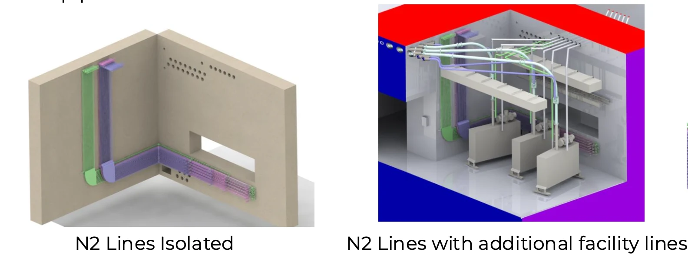

Nusano
Radioisotope production tooling
During my engineering internship at Nusano, I worked on equipment and infrastructure supporting radioisotope production.

Custom electroplating cell
I designed a custom copper-electroplating cell for targets used in radioisotope production.
Nitrogen-line routing
I coordinated and routed 98 nitrogen lines for installation within radioactive bunkers.


Skills: Tooling design, Electroplating, Installation planning